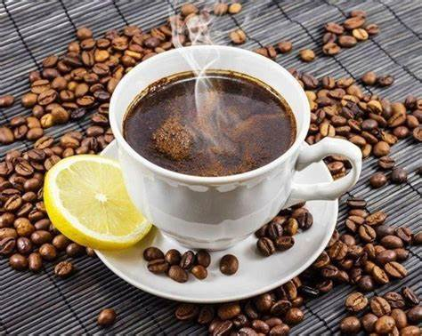

Lemon Coffee

A delicious cup of lemon coffee
Hot Lemon Coffee
Let me tell you how to make lemon coffee. This kind of cofee is very relaxing and is very delicious.
Ingredients
- coffee beans
- a tablespoon of absolute vodka
- a thin slice of lemon
- a lighter to make fire
The Steps
- grind the beans and make a cup of coffee
- cut a thin slice of lemon and put it on top
- spread while pouring a tablespoon of vodka on top of the coffee mixture.
- light a small fire on top with a lighter and let it burn out by itself
- can add a little sugar for flavor. Drink and enjoy.